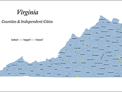
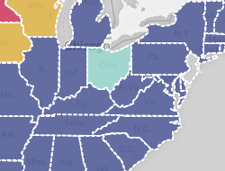
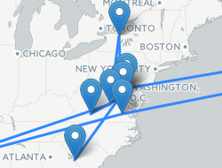

{% extends "_base.html" %}
{% block head %}{% include "_head.html" %}{% endblock %}
{% block nav %}{% include "_nav.html" %}{% endblock %}
{% block content %}

Virginia County Map
A map of Virginia showing all counties and independent cities.
Note: Map shows independent cities prior to Bedford City's transition to town status within Bedford County.

2016 Election Maps
A set of interactive web maps showing the results of the 2016 U.S. Presidential Elections from the party primaries and caucuses up to the general election.

Where I've Lived
An animated web map that shows where I have lived throughout my life from birth until present.
{% endblock %}
{% block footer %}{% include "_footer.html" %}{% endblock %}